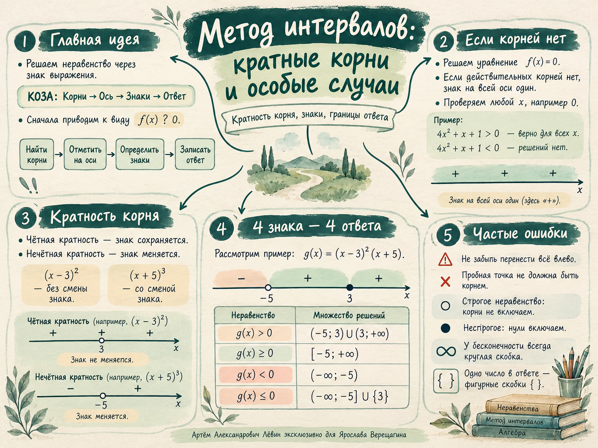

Уравнение
4x² + x + 1 = 0
D = 1 − 4 · 4 · 1 = −15. Действительных корней нет.
Занятие · 19 октября 2026 · Алгебра
Что происходит со знаком произведения при переходе через корень? Когда точка включается в ответ, хотя соседние интервалы не подходят? Разбираем по шагам и проверяем на числовой оси.
01 / Основной метод
Решение сводится к вопросу: на каких промежутках выражение положительно, отрицательно или равно нулю?
Сначала перенесите всё влево и оставьте справа нуль. Например, x² ≤ x + 2 ⇔ x² − x − 2 ≤ 0.
Решите вспомогательное уравнение f(x) = 0.
Отметьте найденные действительные корни по возрастанию.
Подставьте пробное число из промежутка, затем учтите кратности.
Выберите интервалы и решите, какие нули включить.
Корни −2 и 3. Проверяем x = 0: f(0) = −6. Между корнями стоит минус, поэтому x ∈ (−2; 3).
В строгом неравенстве нули исключаются. В нестрогом неравенстве все нули многочлена включаются. У бесконечности скобки всегда круглые.
02 / Особый случай
Отсутствие действительных корней ещё не означает отсутствие решений неравенства.
D = 1 − 4 · 4 · 1 = −15. Действительных корней нет.
Для любого действительного x значение положительно: при переходе по оси знак нигде не меняется.
Следствие: при 4x² + x + 1 > 0 ответ — ℝ, а при 4x² + x + 1 < 0 решений нет (∅).
03 / Главная закономерность
Если f(x) = (x − a)m · g(x), где g(a) ≠ 0, то m — кратность корня a.
Знак сохраняется. По обе стороны от корня множитель неотрицателен.
Знак меняется. Множитель проходит от минуса к плюсу.
Нули: −3 (кратность 5), 0 (2), 1 (3), 4 (4). Справа от 4 знак плюс; переходя влево, сохраняем знак у 4, меняем у 1, сохраняем у 0 и меняем у −3.
Критические точки расположены на одной числовой оси в лаборатории.
Для ≥ 0 подходят положительные промежутки и все нули. Нуль x = 0 — изолированное решение между отрицательными промежутками.
04 / Изменяется только знак неравенства
Корни и кратности остаются прежними. Меняется выбор интервалов и включение нулей.
Корень −5 нечётной кратности; корень 3 чётной. Слева от −5 выражение отрицательно, справа положительно, кроме точки 3, где оно равно нулю.
| Неравенство | Решения |
|---|---|
| g(x) > 0 | (−5; 3) ∪ (3; +∞) |
| g(x) ≥ 0 | [−5; +∞) |
| g(x) < 0 | (−∞; −5) |
| g(x) ≤ 0 | (−∞; −5] ∪ {3} |
05 / Применение
Корни для метода интервалов удобно искать из произведения множителей.
Корни −8, 0, 8 — простые. Справа от 8 знак плюс, а при переходе через каждый корень знак меняется. Следовательно, x ∈ (−8; 0) ∪ (8; +∞).

06 / Самостоятельная практика
Решите все неравенства методом интервалов. Отмечайте выполненные задания; ответы откройте после решения.
Выполнено: 0 из 10
Обратите внимание на отдельную точку в № 7 и на кратности 20, 2 и 1001 в № 9.